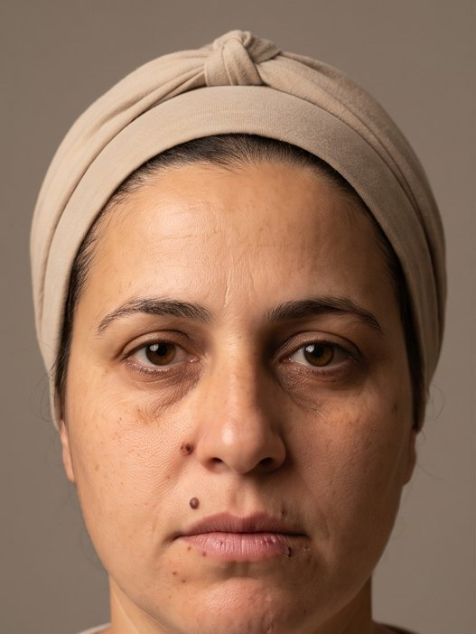
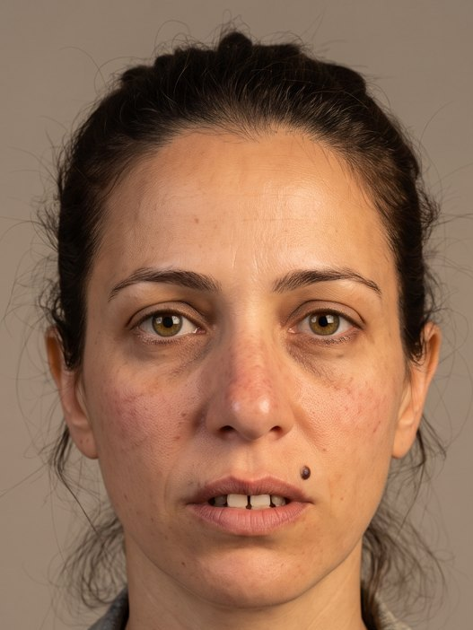
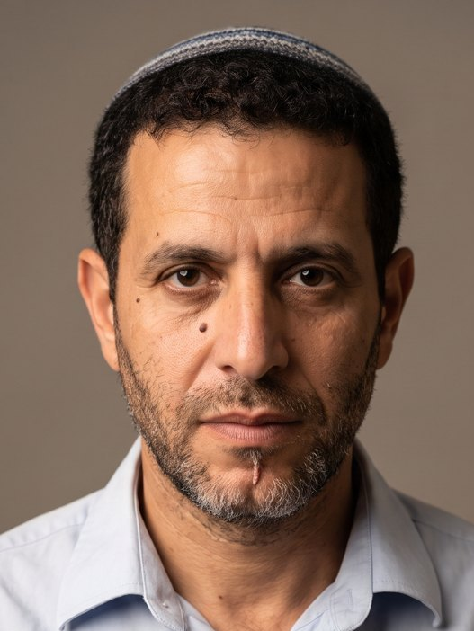
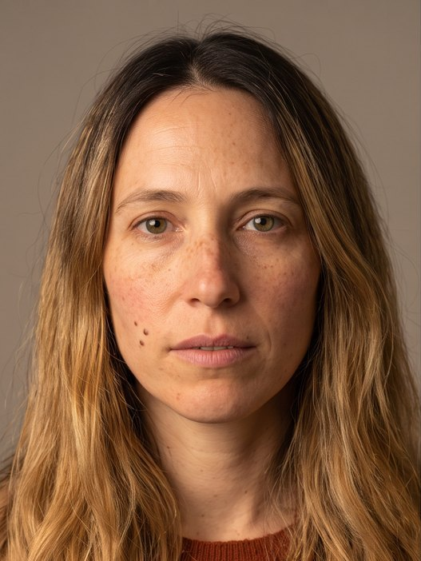
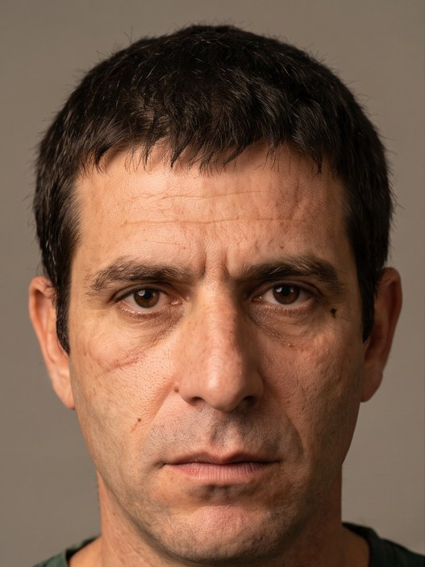

אגף הרווחה · עיריית שדרותקמפיין ליום המאבק באלימות במשפחה
בהפקת
סדרת ריל לאינסטגרם לתושבי שדרות. בכל סרטון סיטואציה יומיומית שכולם מכירים, בלי צעקה ובלי מכה, ורק בסוף מבינים שזו אלימות. המסמך הזה הוא התסריטים, הדמויות והמסרים לאישורכם לפני תחילת ההפקה.
לא כל אלימות משאירה סימן.
אבל כל אלימות משאירה השפעה.
המשפט המחבר של הסדרה. כל סרטון מסתיים בשם של מה שראינו, ב"אפשר אחרת" ובהפניה לעזרה של אגף הרווחה.
הקמפיין לא מראה אלימות. הוא מראה מה היא עושה להתנהגות: יד שנעצרת, חיוך שנעלם, ילדה שמסדרת את העיפרון בלי שביקשו ממנה. המטרה היא שאדם שרואה את זה באינסטגרם יעצור לשנייה ויחשוב: גם אצלי ככה.
תושבי שדרות והסביבה, בני זוג בגילאי 30 עד 50, דתיים וחילוניים. אנשים שצופים באינסטגרם בנייד, לפעמים בלי קול, ובדרך כלל לא מחפשים תוכן על אלימות. לכן הסרטונים מתחילים כמו שגרה רגילה, מובנים גם בלי סאונד, ומדברים בגובה העיניים.
לכל סרטון עמוד משלו: הסרטון לצפייה, הדמויות, הלוקיישנים, התסריט שנייה-שנייה והטקסטים שעל המסך. סרטון 02 עדיין בעבודה.

סרטון 01 · ▶ לצפייההם כבר יודעיםפחד מתמשך בבית
סרטון 02העסקה נדחתהפיקוח ושליטה כלכלית
סרטון 03 · ▶ לצפייההתמונה המשפחתיתהשפלה והקטנה רגשית
סרטון 04 · ▶ לצפייהלמה את לא עונה?קנאה אובססיבית ושליטה
סרטון 05 · ▶ לצפייההדלת החצי פתוחההעברה בין דורית (גרסת עבודה)חמשת הסרטונים נראים כאילו צולמו באותה הפקה: מצלמה בגובה העיניים, פריימים יציבים, קלוז-אפים על הפנים, אור צהוב חם של בית ישראלי. בלי מראה מבריק, בלי צבעי אימה, בלי מוזיקה דרמטית.
חמשת הסרטונים מופקים דרך Efect, בהובלת אוראל לוי: תסריט, בימוי, יצירת הדמויות והסצנות, עריכה, סאונד וטקסטים, עד חמישה סרטונים מוכנים לפרסום.